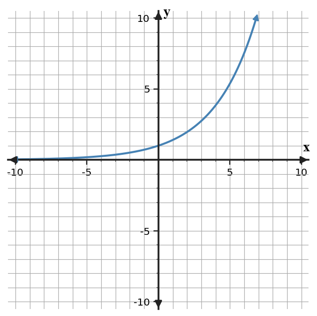

U7-S1-WTC01
Classify the function family represented by the table and name the numerical pattern that supports your choice.
Before formal instruction, record one feature of the displayed representation that could help you test your conclusion.
| x | y |
|---|---|
| 0 | 8 |
| 1 | 32 |
| 2 | 128 |
| 3 | 512 |

Teacher answer / solution
Exponential; constant ratio 4 with starting output 8. A useful feature should be tied to the displayed graph or structure.
The table shows constant ratio 4 with starting output 8, which is characteristic of a exponential relationship.